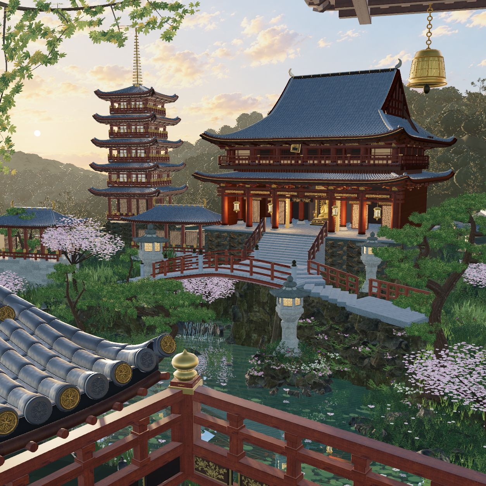

摄影相似度未验收，画面仍有明显 CG 感。最新 full、真实 hero 子视锥与近岸低视角均为官方 FIFO 实际原生 1254 × 1254，同一份 R18 源码。参考照片仅用于比较；加载、有限几何、着色器通过与非空像素均不能代替摄影验收。点击图像可查看原 PNG。
相对 R11，完整寺院中景按固定 3D 相似变换降低并推远，旧高直池岸改成低岸、水湾和真实承托土体。回岸石步道完整接入东侧陆地，殿基两侧补入有坡脚的土坡和成熟木本灌木。灯笼岛、蕨类、花灌木与 CC0 花草共用一块连续土面；主樱树移至左后岸真实土岬，次枝、花梢、花梗及五瓣伞状花束均为几何。
一份完整世界天空供应相机、真实水面反射和 PMREM；采用实际太阳颜色与方向、云光学结构、清空隙散射及八个真实空间采光捕获。松针改回毫米尺度，薄叶从同一空间辐亮度的背面接收透射光；红漆/原木/凸边脱漆与清漆各有实际响应。全局曝光保持 1.02。
R18 又将殿身、主阶上口、佛堂、实际灯与廊内 capture 同降 0.28 世界米，上屋顶起拱由 6.15 改为 7.30 模型米；瓦面、山墙和承托共享同一参数。樱花保留完全相同的表面三角位置与颜色，花瓣共享顶点，连续杯状法线使单棵花瓣缓冲从 80.9 降至 39.3 MB。
剩余差距：屋脊/檐口的平面方向仍不完全匹配；梁栏重复、针叶颗粒、樱冠丰满度和池中小花仍显程序化；暖金夕照、阴影过渡与大气散射尚未接近参考。侧向机位仍会看到较亮的测量天空区域。原生采光是实际局部捕获近似，没有声称求解完整多次反弹 GI。
R18 source: 9cff75d82122d3cac20d45f09e60b0633baca1dcfc8cdaa9ab2e3fb387f2e563
保留 R11: 9b890d3f87a71298f82841e11d03c4b8ff911ebeb8149ca5e379c175c620b6a6
独立 R06 发布边界: 70005eada267162e740045177501d23745d84d9dfcaa19ee22f21d1d508e9994
| 物理关系 | 之前 | R18 |
|---|---|---|
| 主殿地板 / 主阶顶，世界米 | 7.508 / 7.50 | 5.1112 / 5.10 |
| 上屋顶右脊锚点，CPU 投影像素 | (1022.29, 183.57) | (1023.36, 155.77) |
| 主樱树根，世界坐标 | (−12, 0.388, 0.6) | (−18, 0.78, −14.5) |
| 保留针叶直径，米 | 0.007–0.0102 | 0.0025–0.0034 |
| 灯笼岛实土 / 灯笼基脚，世界米 | 根高另用隐含椭球，缺连续土面 | 1.85 / 1.8749 |

复用已声明的 sky-only 生成天空结构及现有 CC0 / CC BY 资产；未新增场景替代图、照片贴片、下载资产或 Blend / 大导出。R11 与 R12–R18 紧凑源码均逐文件校验保存，失败候选和实际 PNG 保留。
完整交接、前后坐标与限制 · 最新同源原生验证 · R18 几何 / 光照数据 · 源码快照校验 · 全部迭代记录 · R11 保留审图页 · 独立 R06 发布冻结边界